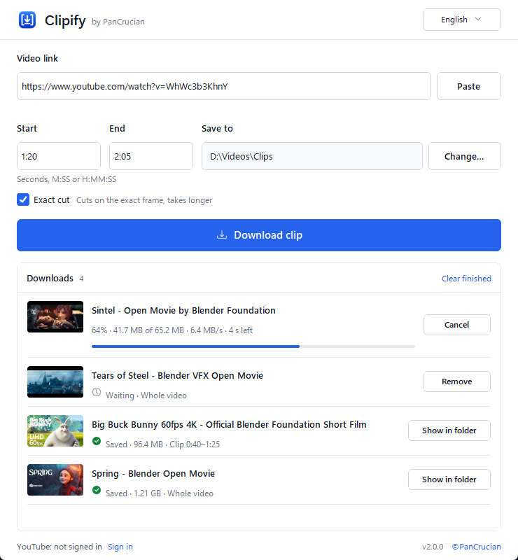

Download YouTube videos — or just the part you need
Paste a link, set a start and end time, press Download. Clipify saves the clip in the best available quality. Free for Windows and macOS, nothing to install.
Version 2.0.0 · Windows 10/11 (64-bit) · macOS 11 or later · ZIP, no installer

Save a clip in three steps
No settings to learn. The whole job fits in one window.
Paste the link
Copy the video’s address in your browser and press Paste.
Set the time
Type Start and End as seconds, M:SS or H:MM:SS. Leave them empty to get the whole video.
Download
Press Download clip. When the row says Saved, Show in folder opens the file.
Everything a clip downloader should do
Built on yt-dlp and FFmpeg, wrapped in a window anyone can use.
- Only the part you need
- Clipify downloads just the stretch between Start and End, not the whole video.
- Exact cut
- Starts and ends on the exact frame when precision matters. It takes longer to process.
- Best available quality
- Takes YouTube’s best video and audio and joins them into one file, usually MP4 or WebM.
- A queue that shows everything
- Add several links. Each row shows progress, size, speed and time left; cancel or retry any of them.
- Nothing gets overwritten
- A name clash gets a numbered copy. Odd characters and very long titles become safe file names.
- Sign in only when YouTube asks
- For bot checks, age checks or private videos shared with you, sign in once in a separate browser window. Your password stays with Google.
- Portable
- No installer, no Python, no FFmpeg setup. Unzip and run; settings stay next to the app.
- Two languages, two themes
- English and Russian, light and dark, following your system.
Questions
How do I download only part of a YouTube video?
Paste the link into Clipify, type the start and end time (for example 1:20 and 2:05) and press Download clip. Clipify downloads only that stretch. Turn on Exact cut if the clip must begin and end on the exact frame.
Is Clipify free?
Yes. There are no ads, no paid tier and no account. The source code is on GitHub.
Do I need to install anything?
No. Download the ZIP for your system, unzip it and run Clipify. Everything it needs is inside the archive.
Where are my videos saved?
In the Clipify folder, unless you choose another one with Change…. Clipify remembers the folder you pick.
Why does YouTube ask me to sign in?
YouTube sometimes asks to confirm you’re not a bot, checks your age, or limits a video to certain accounts. Press Sign in at the bottom of the window and sign in to Google in the separate browser window that opens. Clipify keeps only the YouTube session, in a file next to the app; your password stays with Google.
macOS says Clipify can’t be opened
The macOS builds are not signed by Apple. Open System Settings → Privacy & Security and press Open Anyway next to the Clipify message, then run the app again.
Get Clipify
Free for Windows 10/11 and macOS 11 or later.